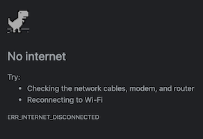

“Getting Help in Python When Coding Offline”
2020-06-19
python, self-help, no-internet
For most of the last year, I’ve written, studied and coded in offline mode. The following are some of my offline sources of reference.

Browsers
I love websites, such as Chakra UI, that cache docs locally using local storage and service workers. I hope more documentation sites do this, particularly for tutorials.
Dev Docs allows you to cache different sets of documentation. I use it for HTML, CSS, DOM, Enzyme, HTTP, Javascript, Jest, Markdown, Matplotlib, Node, Pandas, Python, React and TypeScript.
Command Line
In most REPLs and command lines hitting the tab key will display the possible completions.
>>> re.<tab key>
re.A re.IGNORECASE re.Match( re.T ...
help is a go-to in the Python REPL.
>>> help(str.split)
Help on built-in function split:
split(sep=None, maxsplit=-1) method of builtins.str instance
Return a list of the words in the string, using sep as the delimiter string. [...]
Also available in Python is dir. Given an object, such as str below, dir returns “some of” an object’s attributes. Called without an argument it’ll return the names in the current scope.
>>> dir(str)
['__add__', '__class__', '__contains__', ... 'upper', 'zfill']
Node Modules
One of the pleasures of coding offline is getting intimate with the packages one uses. In libraries like Gatsby, I’ll fork/clone the repo for offline reference. The repo for development will have more documentation and useful resources than the installed package. That said, I commonly find interesting code in node_modules that I haven’t read.
To read these I start with the read-me, in VS Code’s markdown preview mode.
code node_modules/funcional-red-black-tree/README.md